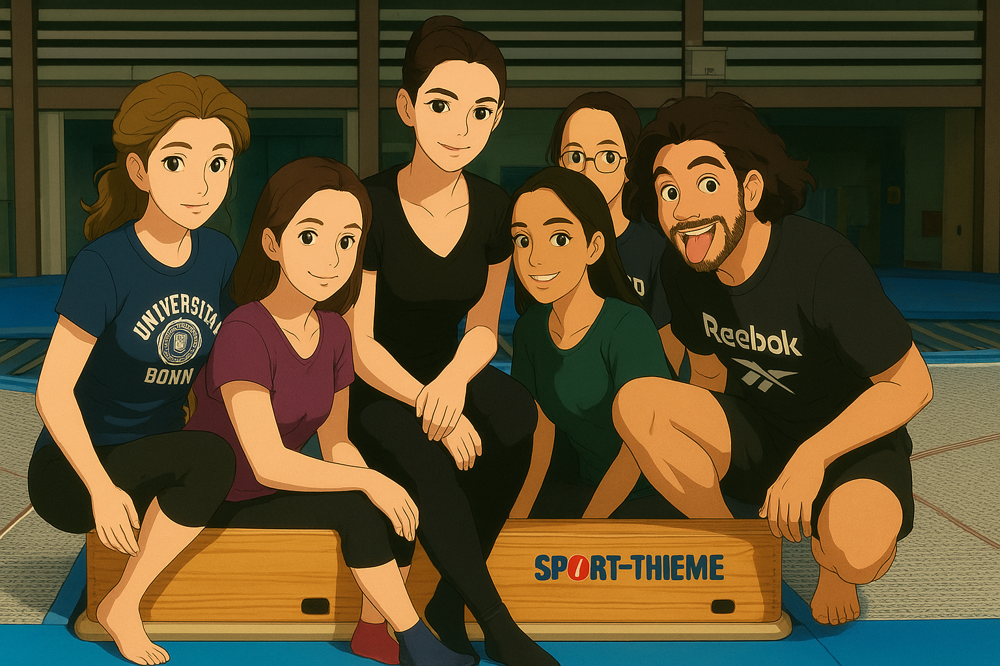

Flipped Classroom in the Forest 森林中的翻轉教室
Posted on 21 September, 2025
在挑高三層樓高的體育館裡，莉亞在彈簧床上輕盈地彈跳，手指幾乎要碰到天花板了。 接著，她完成了一連串優美而流暢的轉體與直體空翻。那一刻，我看得目不轉睛。 莉亞不僅是醫學系的學生，還是學校的體操選手，也是這門體育課的指導員。 而這堂課，只是德國大學體育課中琳瑯滿目的選擇之一。
德國的大學體育課五花八門，除了常見的球類運動，還有體操、彈簧床、西洋劍、武術，甚至有泛舟和滑雪。 對外國學生來說，那些既有難度又以德文授課的體育課，往往令人卻步。 但因為我對體操的興趣，以及想深入體驗德國大學生活的渴望，最後還是鼓起勇氣選修了彈簧床課。 初級課程裡，我們先學在彈簧床上控制身體肌肉的緊繃和放鬆，讓彈跳時身體能維持直立，起跳和落下能保持在床面上標示的十字中心。 接著練習空中變換動作，例如從站姿變成俯臥，或是坐著彈跳接轉體，幾週後再慢慢挑戰團身的前後空翻。 每當我因聽不太懂顯得手足無措時，莉亞總會帶著微笑，一躍而上彈簧床再次示範給我看。她的耐心和鼓勵，讓我總是期待每週三傍晚的體育課。 不過，讓我印象深刻的並不僅是課程本身。
除了有趣又有挑戰性的課程，課程前後大家同心協力架設和拆解器械的場景，也深深留在我的記憶裡。 平時體育館是保持淨空的，所以每次上課前幾分鐘，幾個人會負責把彈簧床推出來並快速又仔細地組裝好，其他人則會一起把墊子和護欄等器材從搬到適當的位置。 課後大家也會迅速拆解器械，把場地收拾好，讓緊接著進行的器械體操課能開始他們的器械架設。 一次次看著並參與著這樣的過程，我感受到德國人在團隊合作和責任分擔上的默契與效率。
體育館坐落在山坡上的森林裡。期待的課結束後，我還能享受一段獨自漫步的時光。 夏天時沿著林道常能看見染紅天際的晚霞；冬天則是在黑暗中，甚至踩著積雪前行。儘管路途有些艱辛，卻是難忘的經歷。 有一次回家，一位女同學開車經過，她搖下車窗親切地問我是否需要搭便車。當時德文對我來說仍然有點陌生，卻讓我覺得德文聽起來是親切而友善的。
這段體育課的經歷，帶給我的不只是運動技巧，更留下了緊張卻美好的互動回憶。 彈簧床上的每一次起跳，都提醒我：在人生的路途上，同樣需要找到屬於自己的重心，並持續朝正確的方向前進。 當我們學會調整與專注時，即使在有限的範圍內，也能體驗到自由飛翔的喜悅。

In the three-story-high gymnasium, Lea bounced gracefully on the trampoline, her fingertips almost touching the ceiling. Then she performed a series of elegant and fluid twists and layout somersaults. In that moment, I couldn’t take my eyes off her. Lea was not only a medical student but also a member of the university’s gymnastics team and the instructor for our sports class. And this class was just one among the many options offered by German universities.
University sports courses in Germany are incredibly diverse. Besides the usual ball games, there are gymnastics, trampoline, fencing, martial arts, and even canoeing and skiing. For international students, these classes—challenging in themselves and taught in German—can be intimidating. But because of my interest in gymnastics, and my desire to experience university life in Germany more deeply, I finally gathered the courage to sign up for the trampoline course.
In the beginner’s class, we first learned how to control our muscles on the trampoline, so that we could keep our bodies upright while bouncing and land steadily on the cross marked at the center of the mat. Then we practiced simple aerial transitions, like moving from a standing position to lying flat, or bouncing in a seated position and then adding a twist. After a few weeks, we gradually worked our way up to tuck front and back flips. Whenever I looked confused because I couldn’t fully understand the German instructions, Lea would smile, leap onto the trampoline, and demonstrate the movement again. Her patience and encouragement made me look forward to our Wednesday evening classes every week. But what left an impression on me was not only the course itself.
In addition to the fun and challenging lessons, the scenes of everyone working together to set up and dismantle the equipment before and after class also remain vivid in my memory. The gymnasium was usually kept empty, so just a few minutes before each class, some students would push out the trampoline and assemble it quickly but carefully, while others carried mats and guardrails into place. After class, everyone would dismantle the equipment just as swiftly, clearing the floor so the following apparatus gymnastics class could begin setting up their gear. Watching and taking part in this process again and again, I came to appreciate the German sense of teamwork and efficiency in sharing responsibility.
The gymnasium was located in a forest on a hillside. After the class I had been looking forward to, I could enjoy a quiet walk by myself. In summer, I often saw sunsets that painted the sky in deep red along the forest path; in winter, I walked in darkness, sometimes even treading across snowy ground. Though the walk could be demanding, it was an unforgettable experience. Once, on my way home, a female classmate drove past, rolled down her window, and kindly asked if I needed a ride. At that time, German still felt somewhat unfamiliar to me, yet in that moment, it sounded warm and friendly.
This sports class gave me more than just athletic skills. It also left me with precious memories of people, teamwork, and shared effort. Each jump on the trampoline reminded me that in life as well we need to find our own balance and keep aiming in the right direction. When we learn to adjust and to focus, we can also discover, even within limits, the joy of soaring freely.